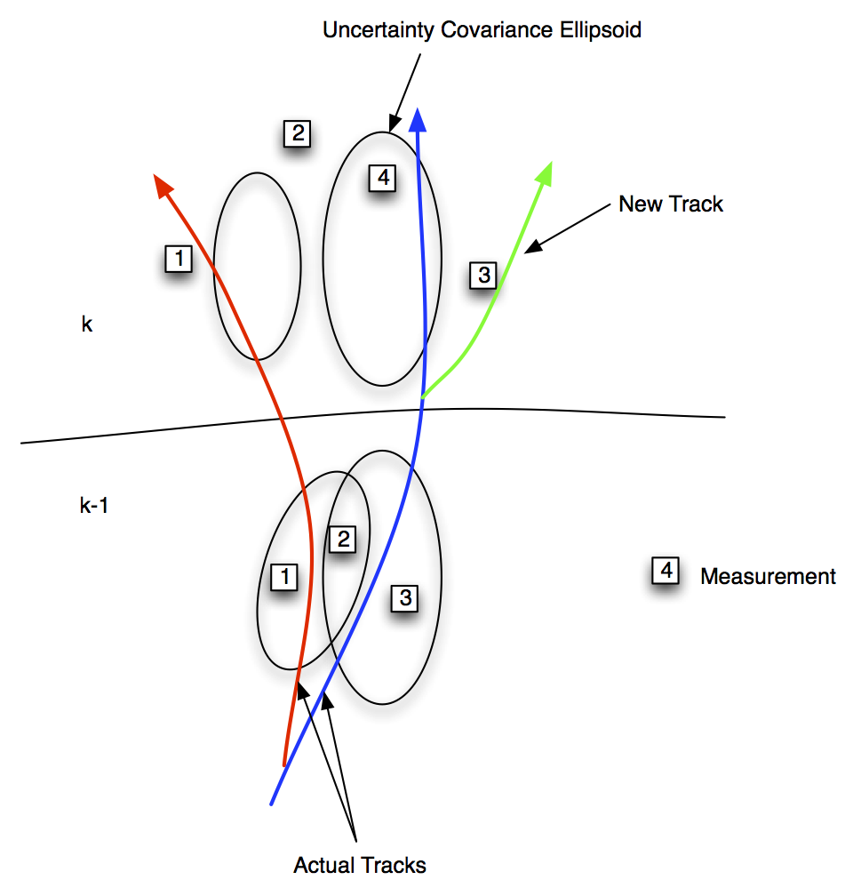
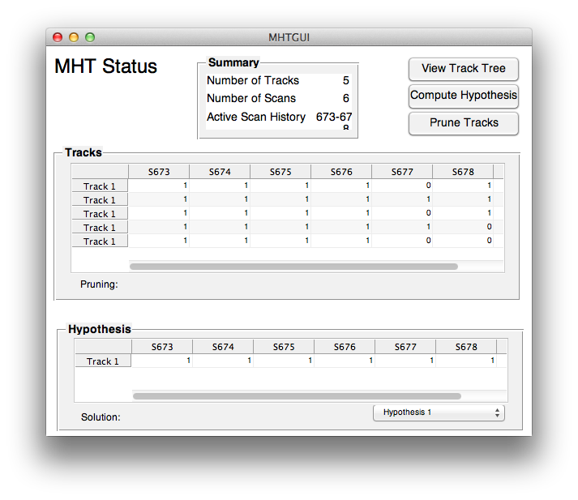

| Getting Started |  |
The MHT Module is an add-on module to the Core Control Toolbox that implements Track-Oriented Multiple Hypothesis Testing. Remember that you must install GLPK and GLPKMEX before running the MHT functions.
A brief manual with background theory and references is included with the module.
Contents
Background on MHT
In many situations a sensor system must track multiple targets, like in rush hour traffic shown in the photo above. This leads to the problem of associating measurements with objects, or tracks. This is an essential element of any practical tracking system.
The following figure shows the general tracking problem. Two scans (concurrent sets) of data are shown. When the first scan is done there are two tracks. The uncertainty ellipsoids are shown and they are based on all previous information. In the $k-1$ scan three measurements are observed. 1 and 3 are within the ellipsoids of the two tracks but 2 is in both. It may be a measurement of either of the tracks or a spurious measurement. In scan $k$ four measurements are taken. Only measurement 4 is in one of the uncertainty ellipsoids. 3 might be interpreted as spurious but it is actually due to to a new track from a third vehicle that separates from the blue track. 1 is outside of the red ellipsoid but is actually a good measurement of the red track and (if correctly interpreted) indicates that the model is erroneous. 4 is a good measurement of the blue track and indicates that the model is valid.
Hypotheses are sets of tracks with consistent data, that is where no measurements are assigned to more than one track. The track-oriented approach recomputes the hypotheses using the newly updated tracks after each scan of data are received. Rather than maintaining, and expanding, hypotheses from scan to scan, the track-oriented approach discards the hypotheses formed on scan k-1. The tracks that survive pruning are predicted to the next scan k where new tracks are formed, using the new observations, and reformed into hypotheses. Except for the necessity to delete some tracks based upon low probability or N-scan pruning, no information is lost because the track scores, that are maintained, contain all the relevant statistical data.
The MHT Toolbox uses a powerful track pruning algorithm that does the pruning in one step. Because of its speed, ad-hoc pruning methods are not required leading to more robust and reliable results. The track management software is, as a consequence, quite simple.
Kalman Filters
The Core Control Toolbox includes Kalman Filters, Extended Kalman Filters and Unscented Kalman Filters. All of the Kalman Filters use a common code format:
u.t = t;
u.y = xS(3,k);
u = UKFPredict( u );
u = UKFUpdate( u );
where u is a MATLAB data structure. This allows the two filtering steps to be used independently. For example, you can run the predict step multiple times while waiting for a measurement update.
You can switch filter types by simply changing the UKF in the name to EKF. Each Kalman Filter can handle multiple measurement sources and measurements arriving at different times.
All three Kalman Filters can be used independently or as part of the MHT system. The usual practice is to test the filter with the dynamical model before incorporating it into the MHT management system. The toolbox makes this easy to do. For example, the toolbox includes MHT distance functions for Kalman Filters, Extended Kalman Filters and the UKF. The UKF automatically uses sigma points and does not require derivatives to be taken of the measurement functions or linearized versions of the measurement models.
Example: Automobile Simulation
This demonstration involves multiple cars passing another car which has a radar system that measures range, range rate and azimuth. The radar has a limited field of view and range.
There are two scripts associated with this demo. The first, UKFAutomobileDemo.m, tests the Unscented Kalman Filter that is to be used in the MHT system. This script has the car containing the radar and one other car that does a variety of maneuvers. It is, in essence, an MHT system with perfect measurement association. It is always a good idea to do this first to sort out the filter parameters and make sure that your filter works. The second script is the MHTAutomobileDemo.m that implements the MHT system.
The first figure shows the four cars in the simulation. At first the car with the radar cannot see any of the cars until one begins to pass.
The passing car is quickly acquired. The tree shows the "thinking" of the MHT algorithm. The circles show which measurements from each scan are assigned to the tracks, and the blue bars are the resulting score for each.
The MHT GUI provides the user with a snapshot of the process of the MHT system thinking. This makes it easy to validate its decisions and to debug your software.
Using MHT
You will need the following functions to build an MHT application.
- MyRHSFunction - The dynamical equations.
- MyKFRHSFunction - The dynamical equations for use by the Kalman Filter. For a linearized version you have the a, b, c and d matrices for the state equations which are x[k+1] = ax[k] + bu[k], y[k] = cx[k] + du[k]. For the nonlinear filters you can use the function above or write another.
- MyMeasFunction - The measurement function. This can be used directly by UKF and EKF. For KF you will need a linearized version.
- MyScanToTrackFunction - This takes a measurement and creates a new track. Since you will rarely have more than partial state information, you will need to "guess" the remaining states.
for the automobile demonstration the functions are.
- RHSAutomobile
- RHSAutomobileXY
- AutoRadar
- ScanToTrackAuto
Once you get good results your can build your MHT function using the same simulation. A convenient way is to have one script to run the simulation and save the measurements and states in a mat file. Then you can use this for both the Kalman Filter and MHT tests.
MHT Simulations
Thorough testing of an MHT system requires a number of features in the simulation.
- The fidelity of the dynamical model and sensor model should be higher than the fidelity of the model used by the Kalman Filter.
- The dynamical model should always be nonlinear.
- False alarms, i.e. measurements that do not correspond to any object, need to be included.
- Missed measurements need to be included.
It is always a good idea to start by using the same model in your simulation as is in your Kalman filter. You should also not add false alarms or missed measurements until you have thoroughly tested your MHT code. Another useful debugging tool is to initialize new track Kalman Filter states exactly. Remove these simplifications one at time to validate your system. Your test script can have flags that allow you to switch these "features" on and off.
Back to main module page.